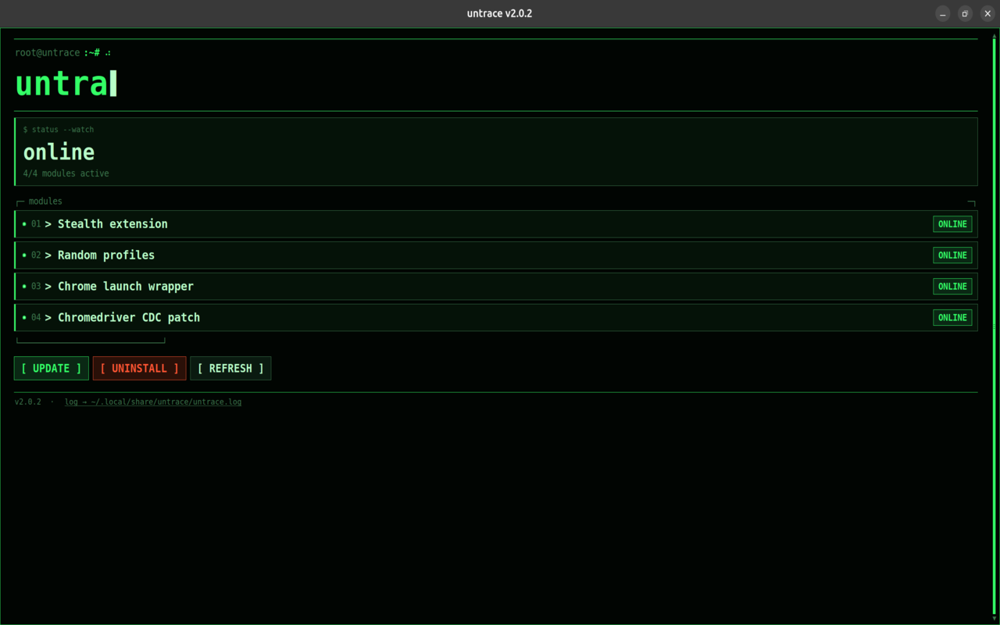

GUI, modules, CLI, troubleshooting.
After you install Untrace, open the desktop app. The GUI is the easiest way to install every module at once, uninstall everything, and see which pieces are online.
For anything more specific, use the terminal. The GUI always installs all three modules together. It does not expose per-module toggles, partial installs, or the same control you get from the CLI flags below.

| Module | Flag |
|---|---|
| Stealth extension | --stealth-extension |
| Launch wrapper | --launch-wrapper |
| Chromedriver CDC patch | --chromedriver-cdc |
untrace --install # all three modules when no extra flags
untrace --status
untrace --uninstall
To install only specific modules, pass the flags you want. Any flag you omit stays off for that run:
untrace --install --stealth-extension
untrace --install --launch-wrapper --chromedriver-cdc
On Linux you may need elevated privileges, for example:
sudo untrace --install --stealth-extension --launch-wrapper
Install Google Chrome (stable). Untrace wraps the system Chrome binary; Chromium-only paths may not be detected.
Windows Smart App Control or WDAC can block the unsigned Chrome wrapper or patched chromedriver. Allow Untrace in Windows Security, temporarily turn off Smart App Control for local testing, or run on Linux.
When the GUI or CLI fails, open the log and include it in a GitHub issue:
%LOCALAPPDATA%\Untrace\untrace.log
~/.local/share/untrace/untrace.log
Windows path above, Linux path below.